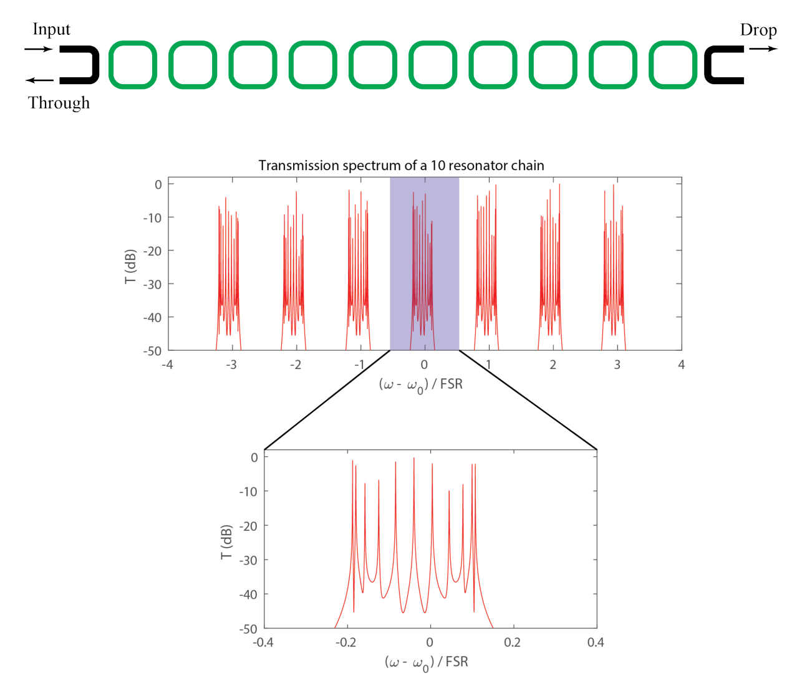

Projects in integrated photonics, optical experiments, and scientific inference. Each begins with a measurement question and follows the assumptions, methods, and evidence behind the answer.
Selected research
01
Northeastern University · M.S. thesis · 2024
Engineering Supermodes of Coupled Resonator Arrays
Designing an optical spectrum by understanding the modes of the array.
The question
How do array geometry, boundary conditions, and local perturbations shape the collective resonances of coupled optical rings?
My contribution
I modeled one- and two-dimensional arrays, examined their eigenvalues and field distributions, and used Fourier-domain perturbations and numerical optimization to shift selected modes while limiting changes to their neighbors.
What I learned
Mode control is constrained by the dispersion and symmetries of the array. Spectral engineering therefore requires more than moving one resonance: the response of the other modes matters too.

Thesis Figure 1.2 · Simulated drop-port spectrum of a ten-ring chain. View full-size figure ↗
Scope: A numerical study of array spectra and mode-selective perturbations, with potential applications in quantum light sources and optical frequency combs.
Taking optical alignment and calibration into an outdoor measurement.
The question
How can the signal, background, and stability of a polarization-encoded optical link be characterized under field conditions?
My contribution
I helped align the optics, calibrate the photon-counting measurement, and characterize signal and background counts. I also participated in a 2 km outdoor link test and documented its configuration and conditions.
What it added to my approach
The work connected optical-system behavior to the practical details behind a measurement: alignment, calibration, and the experimental conditions recorded alongside the result.
A conceptual view of the transmitter, outdoor path, and photon-counting receiver.
Optical alignment
Photon counting
Signal & background
Field documentation
03
Independent study · Public CUORE data · 2026
Hardware-Aware Detector Waveform Inference
How much waveform information and model complexity does the task need—and what does a faithful hardware implementation contribute?
I audited 10,000 released windows for exact shared samples and compared random and overlap-group-aware evaluation. I also tested simple morphology features, registration shifts, and noise changes to understand why a high benchmark score does not by itself establish robustness.
Implementation
I reduced each complete 10-second window from 10,000 to 250 samples and implemented a 2,017-parameter MLP with 16-bit fixed-point arithmetic using hls4ml. All 1,350 frozen validation score codes returned by an Arty A7-100T matched the corresponding HLS C reference.
Measured trade-offs
Changing the hardware reuse factor reduced the measured core latency from 2.78 µs to 1.54 µs at the cost of more resources. A stronger native C++ comparison reached a median of 1.50 µs, so the study did not establish an arithmetic speed advantage over that workstation baseline.
Same learned model · Measured model-core timing
Implementation
Core latency
Measurement boundary
FPGA · Reuse 250
2.78 µs
278 on-board cycles at 100 MHz
FPGA · Reuse 125
1.54 µs
154 on-board cycles at 100 MHz
Native C++ · i9-14900K
1.50 µs
Median across seven benchmark runs
The system-level finding: Both observation time and transport matter. The initial host/UART/FPGA path takes about 48 ms after the raw samples are available, while the task retains a full 10-second observation window. These results establish numerical fidelity and a hardware trade-off, without establishing complete-system acceleration, live detector operation, or transfer to other detectors.
04
AMPLFI collaboration · 2024–2025
Gravitational-Wave Parameter Estimation
Connecting waveform preparation to inference of physical parameters.
Research context
AMPLFI investigates efficient parameter estimation from gravitational-wave signals. The analysis depends on how waveforms are prepared and how the parameter space is constrained.
My contribution
I contributed preprocessing, resampling, and parameter-constraint modules to Bilby and AMPLFI workflows, and evaluated trade-offs among computational cost, parameter constraints, and robustness.
Waveform processing
Bilby
AMPLFI
Parameter estimation
Earlier & adjacent work
Building the foundations.
Radio astronomy · 2021–2022
Milky Way Rotation from 21 cm Hydrogen
I processed neutral-hydrogen spectra to estimate line-of-sight velocities and construct a Galactic rotation curve. I compared the observed curve with luminous-matter and dark-halo models, connecting an observed spectrum to a physical interpretation.
I analyzed switching and endurance measurements for more than 500 samples and compared ruthenium and tungsten-oxide device structures over repeated cycles. The work combined a review of materials and structures with the interpretation of device measurements.
Undergraduate research project · 2021
Gravitational-Wave Data Analysis
Using public LIGO data, I explored frequency-domain filtering, waveform-template matching, and Bayesian ranking concepts. This was an early introduction to separating candidate weak signals from background and documenting the analysis choices.
Northern Arizona University · Capstone · 2021–2022
Greenhouse Monitoring & Control
I led the design of an IoT system for temperature, soil moisture, and illumination monitoring. Arduino hardware, automated controls, and PostgreSQL connected physical sensors to a usable monitoring system.
UnionGPT · Research software
Tools for Source-Based Research
I designed workflows for organizing source notes and archival metadata and built evaluation cases for retrieval and traceability. The aim is to let a researcher inspect which materials support a generated answer. This software work complements my instrumentation interests: outputs should remain connected to the evidence behind them.